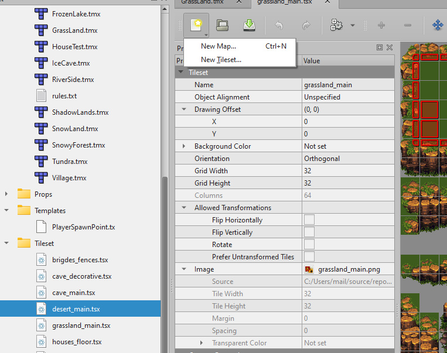
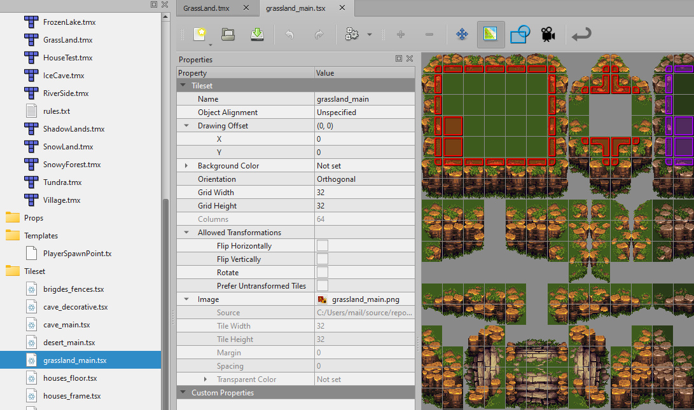
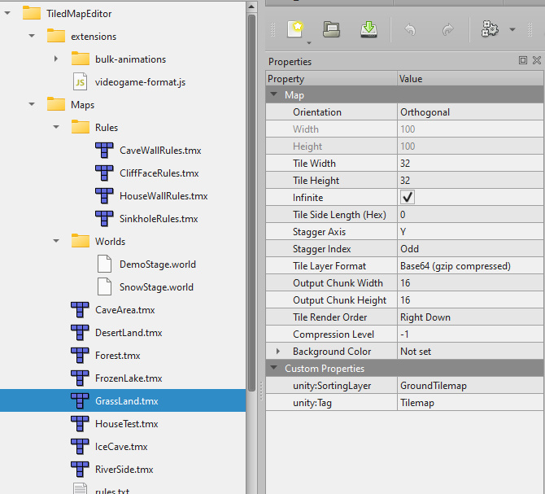

Making a Map
This section will talk about creating a map using Tiled for project Catch.io.
The scripting aspect of the project may change depending on the implementation. In order to keep the development flow going, it is important for us to separate the level designing process from the level feature implementation. We do not want the level designers to wait for something coding task to finish, or lose their work when we change or optimize the tilemap system. At the same time, we want a flexible and powerful editing tool that allows the level designer to abstract the features.
There are many options when it comes to implementing 2D tilemap systems in Unity. To keep the project development flow clean, we will use a map editing tool called Tiled. You can download it from this link.
Tiled is a map editing tool that reads and saves the map information to a file called .tmx which is a form of XML.
Tiled comes with various powerful tools and features that makes 2D map designing easy.
You can add custom properties to petty much everything starting from the map down to the individual tiles.
Thanks to this feature, it is possible to create a concept map that contains features which are not yet implemented in the game.
Our project uses Tiled as the main map designing tool, therefore, designers can directly link Unity prefabs and tile properties within Tiled.
To learn more about what this tool can do, please refer to the Tiled official documentation.
The Basics
Starting a Project
The Tiled project will be part of Catch.io's source code under the folder name TiledMapEditor.
The location of this folder may change depending on how we decide to import the map data to Unity, but as of this writing, the folder will be in the root directory of the project (TiledMapEditor/CatchIoLevels.tiled-project).
Open the project file with Tiled. This file contains the reference to the editor extension location, object type data, auto mapping rules and other information that is required for map designing. Keeping a project file as a single source of reference for all the Tiled files allows us to keep a consistent working environment across different designers. After when you opened a project, all you have to do is double-click the TMX file to open up a map (or create a new one) and make the changes you want.
Tiled Project Folder Structure
For our project, we will have the following folder structure:
extensions: Contains the Tiled editor extension scripts that can be used by the designer. This folder is a clone of the official extension repository. You can create new extensions and just add it in this folder. The editor will automatically parse through the content.Maps: Contains the TMX tilemap file that the designer will directly work on, plus the auto mapping rules entry point. All game levels designed in Tiled should be saved in this folder.Rules: A subdirectory ofMaps. This folder contains the auto mapping rule maps that will be used in this project. All TMX files used here must be referenced in therules.txtfile in theMapsfolder if you want the editor to read them.Schemes: A folder that contains a world file. In short, these are the main file that combine the smaller.tmxfiles into a single large playable map that will be imported to Unity.
Templates: Contains the map object template file. Objects are useful when you want to reference a Unity prefab or other complicated game-specific logic that is difficult to add using Tiled. When you create an object that is used in other maps, please create a template of it and save it in this folder.- Tileset: Contains the tileset information that is used in the map. The tileset source image will always be inside the
Assets/Textures/TilesetorAssets/Textures/Propsfolder. This means that all the tilemap used in Tiled is based on the raw sprites that is read by the game engine. Tileset should match the sprite name that it is based on to reduce confusion. - Types: Contains the map object type data. Using types allows the object to have a consistent property which makes it easy for the Unity importer to handle them later on. All types are kept in a single
.xmlfile, so every time you add a new type, you should overwrite the existing one. However, be careful not to change the file name as they are referenced by the.tiled-projectfile.
Naming Schemes
Different part of the asset will have a slightly different naming scheme.
For general naming styles, we have;
PascalCase:.tmxfiles (tilemap),.worldfiles (tile world), tile layers, terrain names, folder names, and all custom property key-values,.txfiles (object templates), object types (Types/ObjectTypes.xml) are written in this case. For example,GrassLand.tmx,BorderColliderslayer, custom propertysurface:Terrain:Ground, etc.snake_case: only.tsxfiles (tileset) are written in this style. For example,cave_decorative.tsx.kebab-case: only.jsfiles (JavaScript Tiled extensions) are written in this case. Note that folders inside theextensionfolder are also written in this style too.
Useful Features
There are a lot of tools and features that you can use in Tiled. Trying to go through all of them will be impractical. Instead, we'll only cover some important features that will be used the most in our project.
Overview

When you open a TMX file from a Tiled project, you'll be greeted with a tilemap editor screen. This is the place where you will design the game map by placing tiles and objects that will be loaded on to a Unity scene.
Project explorer
All major files that are inside the Tiled project will be shown here. You can load a tilemap or a tileset by double-clicking the file from here. Having said this, Tiled will try to list all files that are within the project directory, meaning that not all files listed in the explorer can be read by the editor (ex, JavaScript files). Also note that the built-in file explorer is not too responsive, so when you make changes to the files, you may need to manually refresh the view by right-clicking on the section and press refresh. Additionally, you cannot delete files directly from the editor. You will need to open the project folder and delete it from there.
Editing Tools
The top section contains the various brushes and operations you can do on a tile or an object, like stamps, terrain brushes, Wang brushes, selection, eraser, and more. Some extensions can add additional functions to this section, making it handy to the designer.
Property Section
You can add or change the property of your map from here. These include built-in properties (settings) such as layer format and the tile size. Custom properties can be viewed from the lower-half section under the 'Custom Properties' header. You can add them by clicking on the blue plus button.
Template Editor
Templates are map objects that is referenced from a separate file. Although it's not displayed on the above example, when you select a custom object on the map that is saved as a template, or click on a
.txtemplate file from the explorer, you can edit it from here. Changes made to the template will be applied to all the maps that uses it.Script Console
Not to be confused with the command feature, which is a predefined bash script, the script console is primarily used for the Tiled scripting extensions, currently implemented for JavaScript and Python. This is more of a debugging tool to see if your project environment has been properly loaded, or to execute scripts directly from the project.

Map Layers
You can add and change and organize the tile layer from here. There aren't much to talk about layers other than that you can create tile layers, object layers, and image layers. Plus, you can also group multiple layers into a single folder to organize them. Layer name and their content will become important when you want to work with the auto mapping feature. Other than that, layers work exactly the way how you would expect it to work on most editing tools.
Tileset/Terrain Selection
You can choose which tile you want to place by selecting it from here. If you select a tile with the stamp brush, that will place the tile selection directly to the map. You can choose your terrain type or the Wang tilesets from their respective tabs which is located at the bottom.
When Designing a Map
There are a couple of custom files and features in Tiled that we use extensively for our project. This section will teach you how to create a full map with all the tile metadata that is used by the game script for the surface effect.
Tilesets and Terrains
Tilesets and terrain brush are the building blocks for any map in Catch.io.
 You can create a new tileset by clicking the new document icon in the top left of the editor screen.

When you create a new tileset, please ensure that it contains the following properties:
Orientation: Orthogonal
ObjectAlignment: Unspecified
GridWidth: 32
GridHeight: 32
The tileset source image will be stored inside Assets/Textures/Tileset/, which is the same location as the in-game tilemap object texture.
Once you created a tileset, you can start defining the terrain types in the tileset.
Terrains are essentially a simple Wang Tile algorithm. Defining the terrains in a tile set allows the designers to use terrain brushes for auto mapping. You can learn more about creating terrains in Tiled from the official documentation.
However, Wang Tile patterns in Tiled can only work in a per-tile basis. Meaning that for multi-tile high objects like cliffs cannot be expressed purely using terrains.
Automapping or rule tiles can solve this. For more information, please refer to the official documentation.
If you have created a tileset and defined the terrains/automapping rules, we can now start designing the actual map.
Tilemap and Layers

In most cases, a tilemap contain the following map properties:
Orientation: Orthogonal
TileWidth: 32
TileHeight: 32
Infinite: true
TileLayerFormat: Base64
OutputChunkWidth: 16
OutputChunkHeight: 16
TileRenderOrder: RightDown
And the following custom properties:
unity:SortingLayer: GroundTilemap
unity:Tag: Tilemap
These custom properties are mostly for the sorting layer and object tagging in Unity.